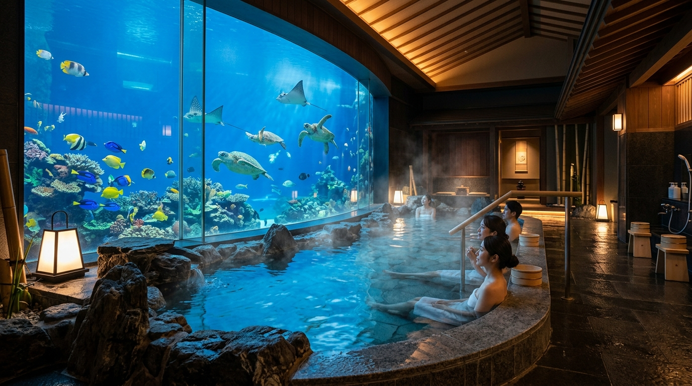
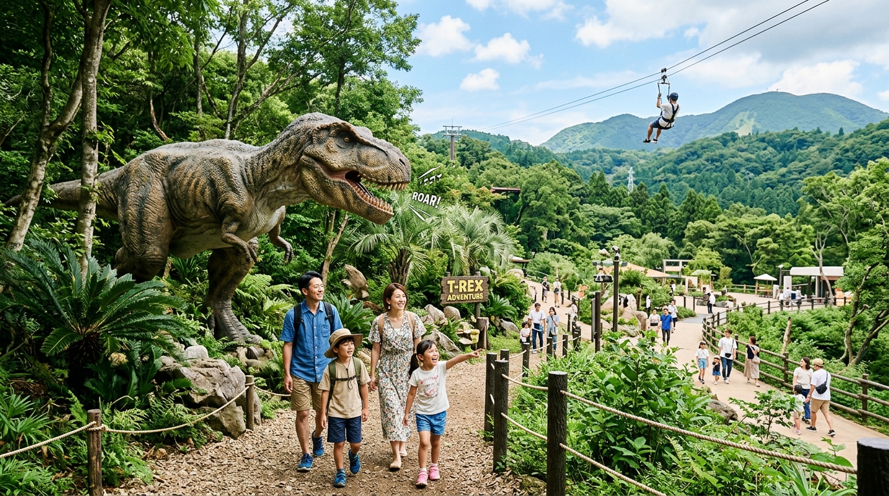
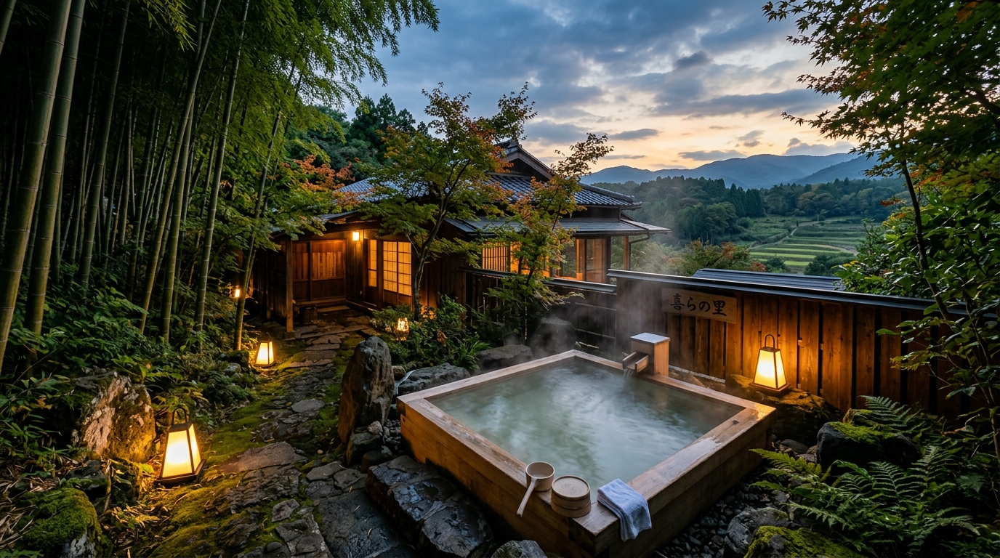
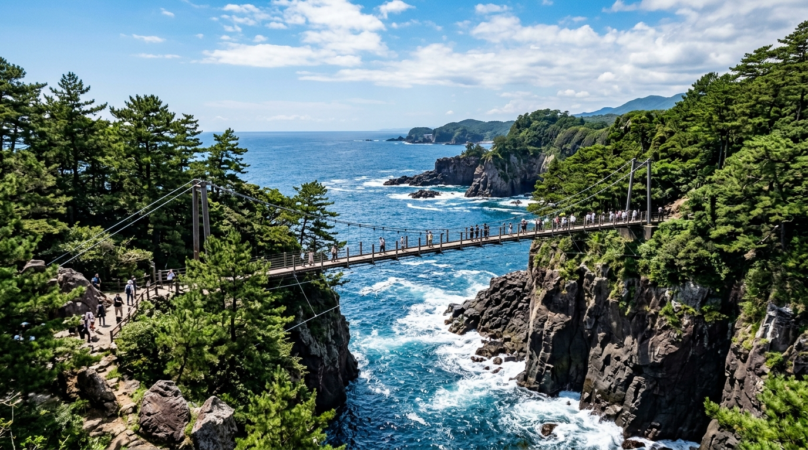
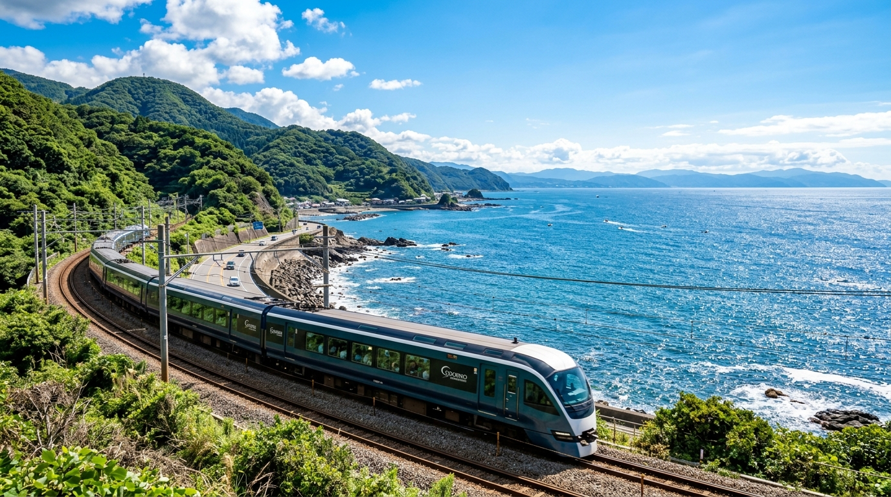

2泊3日 詳細タイムテーブル（分刻み確定版）
復路 特急踊り子62号 予約変更反映済（予約: E80864）
DAY 1
2026年9月21日（月・祝）テーマ：海の伊東・ハトヤ海底冒険 ＆ マリンタウン
09:26 ➡ 10:43
特急 踊り子（伊東編成）1号
予約 E45783
東戸塚駅 出発（09:26）➡ 大船乗換 ➡ 特急踊り子1号（09:37発）➡ 伊東駅（10:43着）
東戸塚から大船駅へ移動し、大船 09:37発の特急踊り子1号に乗車！
【座席】3号車 2番A席、2番B席、2番C席（指定席・在来線チケレス乗車 / 3名横並び）
進行方向左側から相模湾の海と熱海・伊豆の美しい海岸線を眺めながらワクワクのスタート！
※東戸塚〜伊東 84.8km / 所要1時間17分 / おとな2人・こども1人
【座席】3号車 2番A席、2番B席、2番C席（指定席・在来線チケレス乗車 / 3名横並び）
進行方向左側から相模湾の海と熱海・伊豆の美しい海岸線を眺めながらワクワクのスタート！
※東戸塚〜伊東 84.8km / 所要1時間17分 / おとな2人・こども1人
10:55 ➡ 11:05
無料送迎バス（約5分）
伊東駅からサンハトヤへ荷物を先預け
改札を出て右側の土産物屋前付近から無料送迎バスに乗車。サンハトヤのフロントでチェックイン手続きを行い、重いスーツケースを預けて身軽に行動開始！
11:20〜12:30
昼食（海鮮ランチ）
道の駅 伊東マリンタウンでランチ
サンハトヤから徒歩10分（または車3分）。レストラン通りで新鮮な海鮮丼、アジフライ定食、金目鯛など伊豆の海の幸を堪能。
🗺️ マリンタウン MAP
12:40〜13:40
海中展望船ゆーみんフック
海底が見える遊覧船 ＆ 足湯体験
船底のガラス展望室から海の中を泳ぐ魚たちを観察！カモメのエサやり体験 ＆ 名物のカラフルな足湯（あったまりーな）でリフレッシュ。
👦 10歳ポイント：船底のガラス窓から海中のお魚観察＆カモメが手元まで飛んでくる！
14:10〜17:00
宿泊者無料特典
サンハトヤ「古代ビーチ（プール）」＆「海底温泉お魚風呂」

15:00の部屋入室前から宿泊者無料で利用可能！屋内水着ゾーン「古代ビーチ」で泳いだ後、名物の「海底温泉お魚風呂」へ。巨大水槽で優雅に泳ぐウミガメや魚たちを眺めながら温泉入浴。
👦 10歳ポイント：水族館の大水槽の中に入ってお風呂に入っているような大迫力体験！
🗺️ サンハトヤ MAP
18:00〜
夕食バイキング＆宿泊
夏のakaakaチャリティディナーバイキング
お刺身、天ぷら、ステーキ、キッズ向けデザートなど好きなものを好きなだけ楽しむディナーバイキング。夜の海を望む和室でゆったり宿泊。
DAY 2
2026年9月22日（火・国民の休日）テーマ：伊豆ぐらんぱる公園を1日遊び尽くす ＆ きらの里
09:30 ➡ 10:55
チェックアウト＆伊豆高原へ移動
サンハトヤ発 ➡ 伊東駅 ➡ 伊豆急行で伊豆高原駅へ（約20分）
朝食バイキング後、10:00にチェックアウト。送迎バスで伊東駅へ戻り、伊豆急行線で伊豆高原駅へ。駅構内のコインロッカーにスーツケースを預けます。
11:15〜15:45
伊豆ぐらんぱる公園（丸ごと満喫）
伊豆ぐらんぱる公園（昼食 ＆ 大興奮アトラクション）

伊豆高原駅からバスまたはタクシー約10分。午前中からたっぷり約4.5時間滞在！
・園内レストラン「グリルスノーパラダイス」や海賊カフェでランチ
★ジップライン〜風KAZE〜：往復400mの空を滑空！（鳥になった気分の大空中飛行）
★船型立体迷路〜KAiZOKU〜：巨大木造船の立体迷路でスタンプ集め！
★ディノエイジカート：実物大の動く恐竜エリアを駆け抜けるゴーカート！
★ウォーターバルーン / バトルレーザーなど人気アトラクション
★無料エリア：110m見晴らしローラースライダー、ボルダリング、巨大アスレチック広場
・園内レストラン「グリルスノーパラダイス」や海賊カフェでランチ
★ジップライン〜風KAZE〜：往復400mの空を滑空！（鳥になった気分の大空中飛行）
★船型立体迷路〜KAiZOKU〜：巨大木造船の立体迷路でスタンプ集め！
★ディノエイジカート：実物大の動く恐竜エリアを駆け抜けるゴーカート！
★ウォーターバルーン / バトルレーザーなど人気アトラクション
★無料エリア：110m見晴らしローラースライダー、ボルダリング、巨大アスレチック広場
👦 10歳ポイント：時間を気にせずジップライン・海賊船立体迷路・恐竜カート・ロングスライダーを全制覇！
🗺️ ぐらんぱる公園 MAP
16:30〜
きらの里 チェックイン
杜の湯 きらの里 チェックイン ＆ 里山体験

伊豆高原駅で荷物をピックアップし、南口から無料送迎バス（約7分）できらの里へ。
・水車小屋や田畑が広がる里山をお散歩
・帳場前で昔遊び（竹馬、輪投げ、コマ回しなど親子対決！）
・里山小屋で夕方の【無料焼き芋】をパクリ！
・予約不要で何度でも入れる【3つの無料貸切風呂（岩座・竹座・石座）】めぐり
・18:30〜 旬の贅沢「里山会席」ディナー
・20:30〜 大浴場「杜の湯」の露天風呂 ＆ 無料湯上りアイス
・22:00〜 共立リゾート名物【無料の夜鳴きそば】（あっさり醤油ラーメン）！
・水車小屋や田畑が広がる里山をお散歩
・帳場前で昔遊び（竹馬、輪投げ、コマ回しなど親子対決！）
・里山小屋で夕方の【無料焼き芋】をパクリ！
・予約不要で何度でも入れる【3つの無料貸切風呂（岩座・竹座・石座）】めぐり
・18:30〜 旬の贅沢「里山会席」ディナー
・20:30〜 大浴場「杜の湯」の露天風呂 ＆ 無料湯上りアイス
・22:00〜 共立リゾート名物【無料の夜鳴きそば】（あっさり醤油ラーメン）！
👦 10歳ポイント：焼き芋・貸切風呂・夜鳴きそば・湯上りアイスと無料のお楽しみがいっぱい！
🗺️ きらの里 MAP
DAY 3
2026年9月23日（水・祝）テーマ：橋立つり橋・大淀小淀アドベンチャー ＆ 伊豆高原駅から特急踊り子62号で直通帰着
07:30〜10:30
里山の朝・チェックアウト
朝風呂・無料ヤクルト ＆ 里山朝食
朝の温泉入浴（湯上り処で無料ヤクルト）。美味しい里山朝食を食べた後、小川で生き物観察や足湯。10:30にチェックアウトし、送迎バスで伊豆高原駅へ（駅ロッカーに荷物預け）。
11:00〜13:30
橋立つり橋＆対島滝・大淀小淀
橋立つり橋 ＆ 秘境アドベンチャー探検

伊豆高原駅（やまも口）から車約5分（または徒歩約20分）。
・長さ60m・高さ18mの雄大な「橋立つり橋」を渡る！足元に広がる美しい渓谷と波しぶき！
・海に直接注ぎ込む幻の滝「対島（たじま）の滝」展望
・天然の潮だまり「大淀・小淀（おおよど・こよど）」で磯遊び・海の生き物観察！
・長さ60m・高さ18mの雄大な「橋立つり橋」を渡る！足元に広がる美しい渓谷と波しぶき！
・海に直接注ぎ込む幻の滝「対島（たじま）の滝」展望
・天然の潮だまり「大淀・小淀（おおよど・こよど）」で磯遊び・海の生き物観察！
👦 10歳ポイント：自然豊かな渓谷にかかる大吊り橋と、天然プールのような大淀小淀で探検隊気分！
🗺️ 橋立つり橋 MAP
13:45〜15:55
伊豆高原駅前 やまもプラザ
伊豆高原駅前でゆったりランチ ＆ お土産ショッピング・カフェ
16:09発なので時間にたっぷり余裕あり！駅構内・やまもプラザのレストランで金目鯛ランチやそば、カフェ休憩。駅前のお土産店で特産の干物、銘茶、スイーツを購入。ロッカーの荷物をピックアップして改札へ。
16:09 ➡ 17:59
特急 踊り子（伊東編成）62号
予約 E80864
伊豆高原駅（16:09発）➡ 大船乗換（17:44着）➡ 東戸塚駅 帰着（17:59着）

【予約確定済】予約番号: E80864
【座席】7号車 16番A席、16番B席、15番A席（指定席・在来線チケレス乗車）
伊東へ戻る無駄な移動がゼロ！伊豆高原駅から大船駅まで座ったままゆったり快適直通！
大船駅17:44着、乗換えて東戸塚駅へ17:59着。夕方の早い帰着で翌日への疲れを残しません！
※伊豆高原〜東戸塚 100.7km / 所要1時間50分 / おとな2人・こども1人
【座席】7号車 16番A席、16番B席、15番A席（指定席・在来線チケレス乗車）
伊東へ戻る無駄な移動がゼロ！伊豆高原駅から大船駅まで座ったままゆったり快適直通！
大船駅17:44着、乗換えて東戸塚駅へ17:59着。夕方の早い帰着で翌日への疲れを残しません！
※伊豆高原〜東戸塚 100.7km / 所要1時間50分 / おとな2人・こども1人